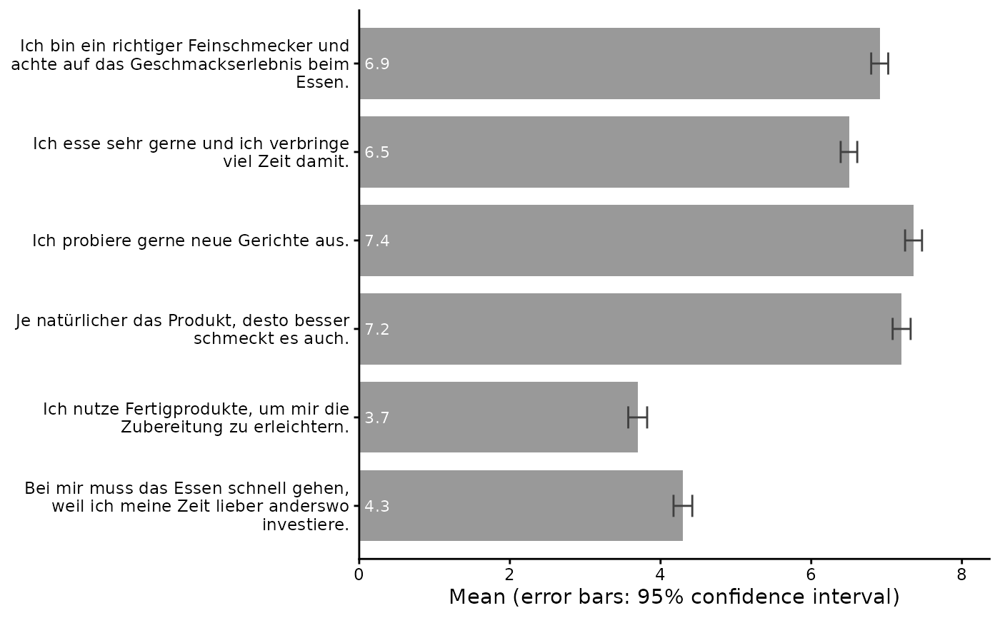
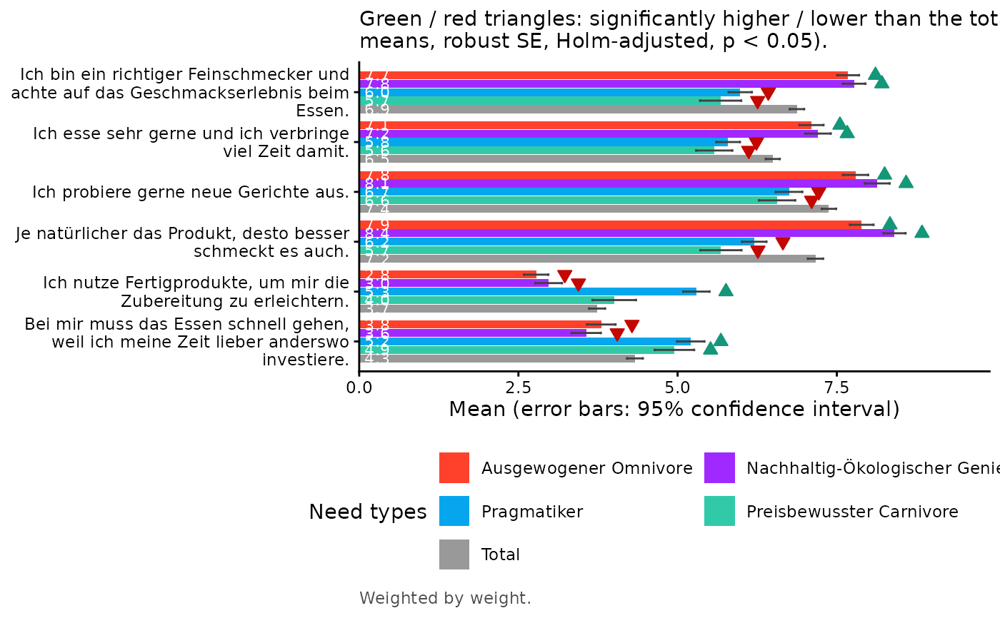
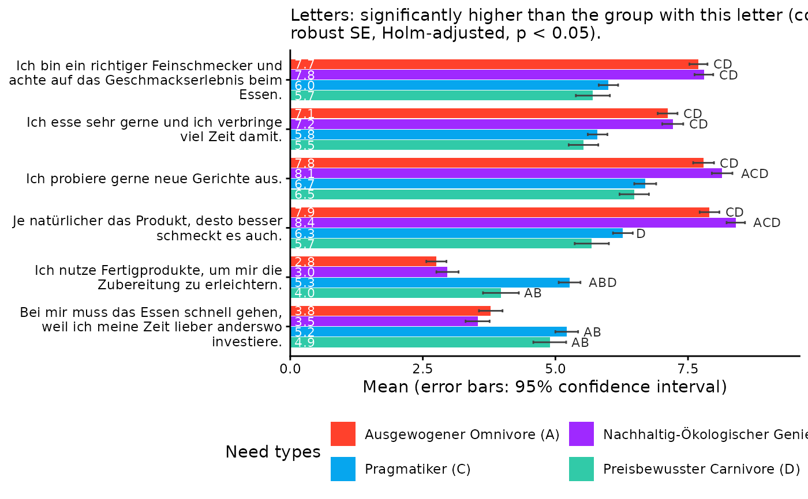
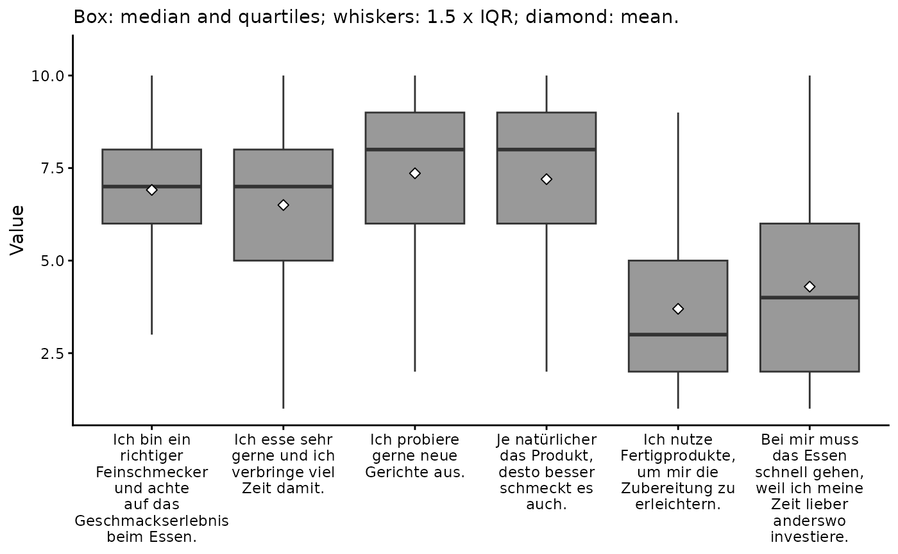
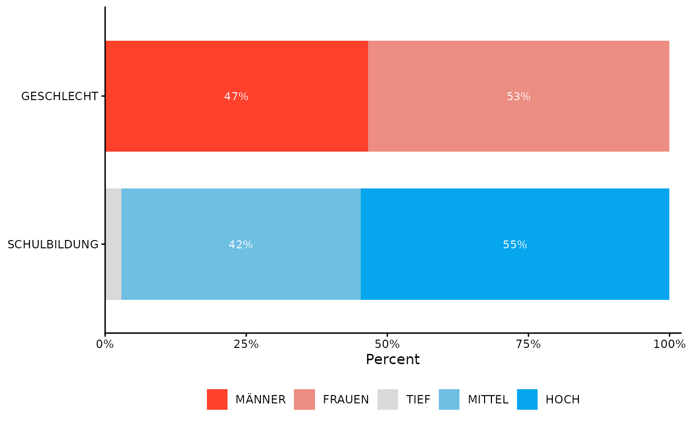

Exploratory data analysis: plot several variables in one plot
Source:R/eda_interactive.R
eda_plot.RdPlots several variables at once, optionally by group (e.g. a cluster solution) and weighted: bar charts of the means with error bars, boxplots, or stacked bar charts of the frequency distributions. Variables are shown with their variable labels.
Usage
eda_plot(
data,
vars,
group = NULL,
weight = NULL,
type = c("auto", "bar", "box", "stacked"),
orientation = c("horizontal", "vertical"),
error = c("ci", "se", "sd", "none"),
conf_level = 0.95,
total = FALSE,
facet = FALSE,
show_values = TRUE,
show_sig = FALSE,
reference = c("total", "rest", "meandev", "groups"),
test_method = c("parametric", "nonparametric"),
alpha = 0.05,
axis_labels = c("label", "name", "both"),
label_width = NULL,
digits = 1,
min_labels = 5,
title = NULL
)Arguments
- data
A data frame, typically a haven-labelled tibble, or the output of
seg_cluster()(see "Grouping by a cluster solution").- vars
The variables to describe: a character vector of names or a tidyselect expression, e.g.
dplyr::starts_with("F50_0_").- group
Optional. Name of a grouping variable (e.g.
"cluster_k4"). Respondents with a missing group are excluded.- weight
Optional. Name of a weight variable.
- type
"auto"(default),"bar"(means),"box"(boxplots) or"stacked"(frequency distributions). See "Details".- orientation
"horizontal"(default) or"vertical"bars.- error
Error bars of bar charts:
"ci"(confidence interval, default),"se"(standard error),"sd"(standard deviation) or"none".- conf_level
Confidence level of the confidence intervals. Defaults to 0.95.
- total
If
TRUEandgroupis given, a "Total" group with all respondents is added. Defaults toFALSE.- facet
If
TRUE, each variable is shown in its own panel with free axes (useful for variables on different scales). Defaults toFALSE.- show_values
If
TRUE(default), the means or percentages are printed on the bars.- show_sig
If
TRUE, significant group differences are marked (bar charts and boxplots with a group). Defaults toFALSE. See "Significant differences".- reference
"total"(default),"rest","meandev"or"groups". See "Significant differences".- test_method
"parametric"(default) or"nonparametric". See "Significant differences".- alpha
Significance level for
show_sig. Defaults to 0.05.- axis_labels
Labels of the variables:
"label"(variable label, default),"name"(variable name) or"both".- label_width
Maximum number of characters per line of the variable labels. Defaults to 40 for horizontal and 15 for vertical plots.
- digits
Number of decimals of the values on the bars. Defaults to 1.
- min_labels
Minimum number of value labels or distinct values for a variable to be treated as numeric (with
treat_as = "auto"). Defaults to 5.- title
Optional plot title.
Details
With type = "auto", the means are plotted as bar chart if all variables
are numeric (see eda_describe()), otherwise the distributions are shown
as stacked bar chart. type = "bar" and type = "box" treat all
variables as numeric (e.g. to plot the mean of a 4-point scale),
type = "stacked" treats all as categorical (e.g. to show the
distribution of a 5-point Likert scale).
Significant differences
With show_sig = TRUE (bar charts and boxplots with a group), significant
differences are marked next to the bars or boxes. The tests are the
comparisons of eda_test() (see "Statistical tests" there): t-tests of
linear contrasts of the (weighted) group means with robust (HC3) standard
errors (test_method = "parametric"), or of the mean ranks
("nonparametric"), Holm-adjusted within each variable, at significance
level alpha.
reference = "total"(default),"rest"or"meandev": triangles pointing up (green,yougov_colors[["Green 2"]]) / down (red,yougov_colors[["Red 2"]]) mark groups that are significantly higher / lower than the total (including the group), the rest of the sample, or the mean of the group means.reference = "groups": each group gets a letter (A, B, C, ...) and each bar shows the letters of the groups it significantly exceeds.
The subtitle of the plot states the test and the reference.
See also
Other eda:
eda_describe(),
eda_explore(),
eda_plot_detail(),
eda_test()
Examples
items <- paste0("F50_0_", 1:6)
# Means with 95% confidence intervals
eda_plot(sm_synthetic, vars = items)

# By the benchmark segments, weighted, with differences from the total
eda_plot(
sm_synthetic,
vars = items,
group = "cluster_benchmark",
weight = "weight",
total = TRUE,
show_sig = TRUE
)

# Significance letters for the differences between the groups
eda_plot(
sm_synthetic,
vars = items,
group = "cluster_benchmark",
show_sig = TRUE,
reference = "groups"
)

# Boxplots and distributions
eda_plot(sm_synthetic, vars = items, type = "box", orientation = "vertical")

eda_plot(sm_synthetic, vars = c("gender", "education"), type = "stacked")
